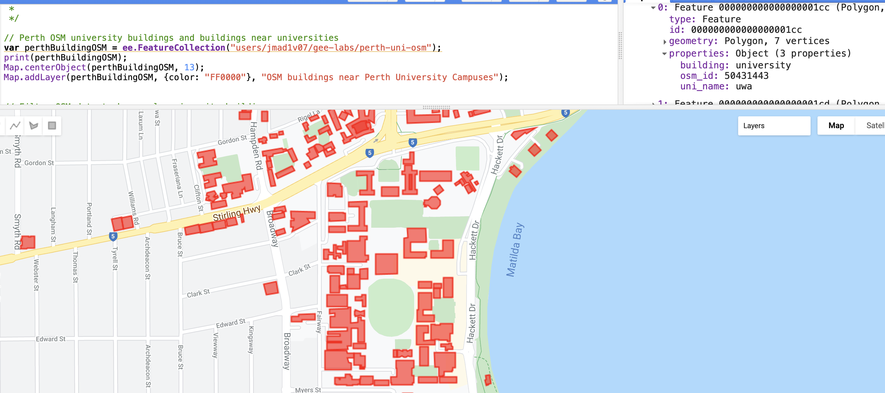
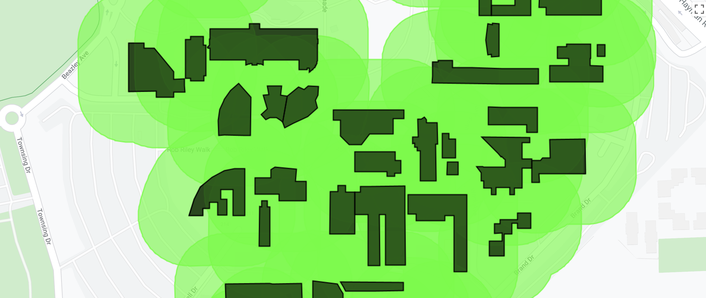
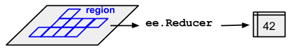
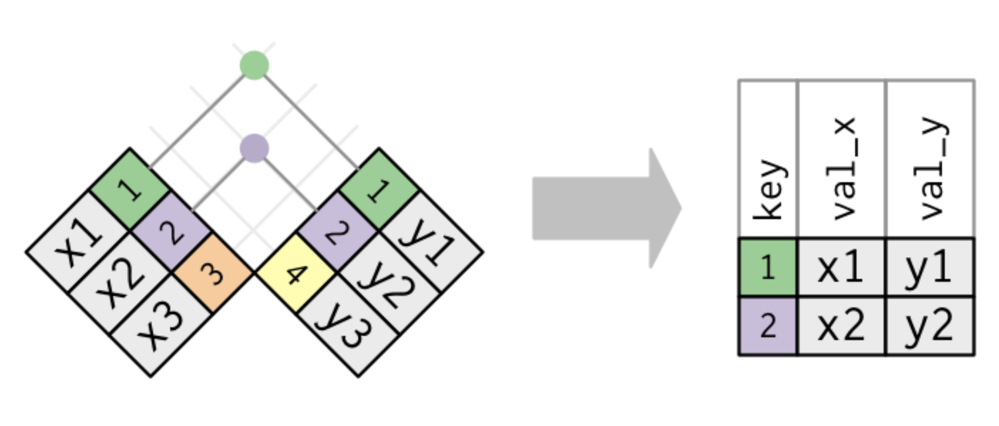
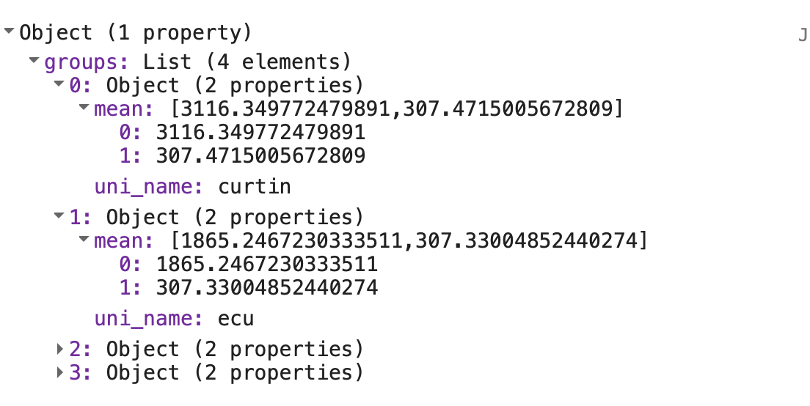
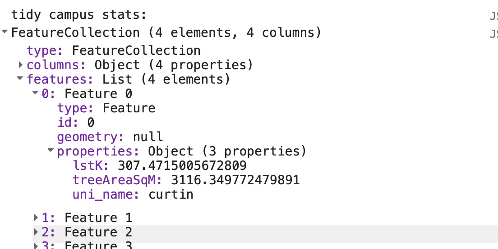
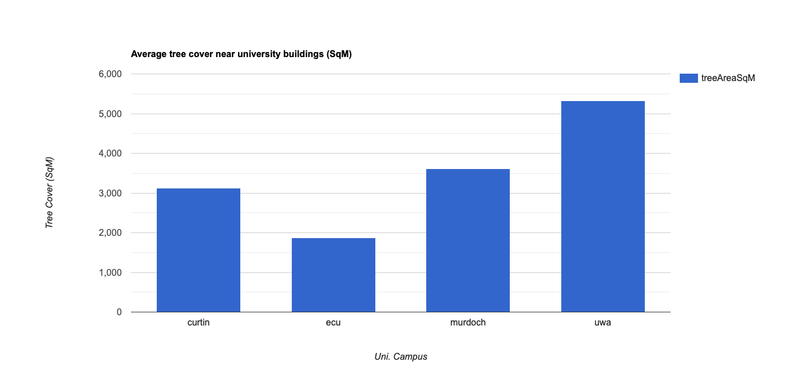
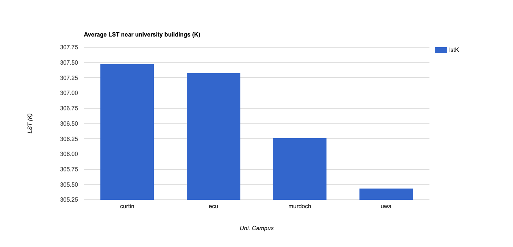
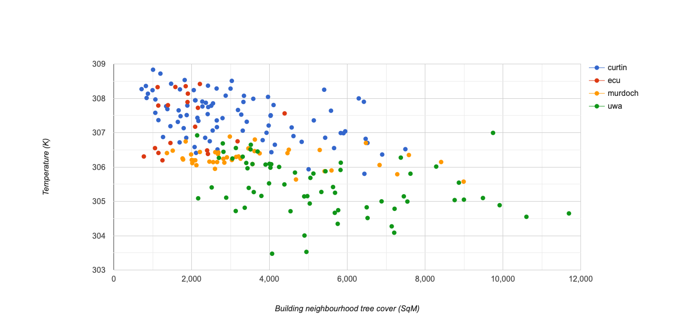

Vector data operations in Google Earth Engine
Introduction
This lab will introduce data transformation and manipulation operations for vector data.
Quick recap
In Google Earth Engine, vector data is represented using Feature objects which include:
geometryproperty storing aGeometryobject that represents location, extent, and shape.propertiesdictionary object of attribute information describing non-spatial characteristics.
A collection of Features in Google Earth Engine is a FeatureCollection.
Data transformations
Data transformation operations can be spatial (manipulating geometries) or non-spatial (manipulating attributes). For example, consider the following operations applied to attributes in a climate dataset:
- Filter and subset: filter the data for all observations that occurred within a time-period (e.g. since the year 2010) and select a variable of interest (e.g. temperature in Fahrenheit).
- Mutate - create a new variable: create a new variable (temperature in Celsius) by converting the observations of temperature in Fahrenheit using the equation: \(T_{(C^{o})} = (T_{(F^{o})} - 32) * 5/9\).
- Join and combine: join your temperature data to precipitation data (e.g. joining on weather station ID and date and time of weather observation).
- Summarise: summarise your data by computing the average daily temperature and precipitation for each weather station.
Most data transformation operations have a spatial equivalent. For example:
- Filter and subset: filter a
FeatureCollectionselecting only weather stations that intersect with the Western Australia extent. - Mutate - create a new variable: convert
Geometryobjects into new spatial objects with different shapes or extents (e.g. through applying a 1 km buffer operation). - Join and combine: combine spatial data with spatial join operations (e.g. join weather station data with Statistical Area Level 1 (SA1) polygon geometries based on the weather station intersecting the SA1 extent)
- Join and combine AND mutate - create a new variable: vector data can be combined with raster data via zonal statistics (e.g. computing the area of each land cover class within a polygon).
- Summarise: perform summary operations for observations within a spatial extent (e.g compute the average temperature of all weather stations within each county).
This lab will demonstrate spatial and non-spatial data transformation operations for vector data in Google Earth Engine. These operations will form a workflow to identify which Perth university has the greenest and coolest campus?
Which Perth university has the greenest and coolest campus?
You will start with a FeatureCollection of Feature objects storing building footprints (a polygon Geometry object) and attribute information indicating if the building is part of a university (the building property), the name of the university (the uni_name property), and a building ID (the osm_id property).
The building footprint data are from Open Street Map and include buildings from the University of Western Australia (UWA) Crawley Campus, Curtin University Bentley Campus, Murdoch University Perth (Murdoch) Campus, Edith Cowan University (ECU) Mount Lawley Campus, and some non-university buildings near to each campus.
You will use the area of tree canopy cover within a certain distance of a building as an indicator of greenness; the tree canopy data is in raster format and derived from the Urban Monitor data (Caccetta, 2012).
The temperature data is in raster format and is average summer (December, January, and February) land surface temperature (LST) from Landsat 8 (Jiménez-Muñoz et al. 2014).
You will need to produce summary statistics that describe the greenness and temperature of each university campus.
Your analysis will comprise the following steps:
- Filter and subset: filter the building footprint
FeatureCollectionto include only university buildings. - Mutate - create a new variable: perform a buffer operation on each university building footprint
Geometryobject. - Mutate - create a new variable: compute the area of tree canopy cover within the buffer of each building footprint.
- Mutate - create a new variable: compute the average LST for each building's buffer.
- Join and combine: join the area of tree canopy cover and average LST within each building's buffer to a
FeatureCollectionstoring the building footprintGeometrys. - Summarise: compute the average tree canopy cover and LST for buildings on each campus.
Computational thinking
Notice how we broke this analysis down into a sequence of discrete data transformation steps before writing any code. This is an example of computational thinking: breaking complex problem into a series of smaller, well-defined steps that are easier to solve.
Setup
Create a new script in your labs-gee/lab-6 repository called vector-data-operations-in-gee.js. Enter the following comment header to the script.
Data Import
Execute the following code to import the data.
The OSM buildings near Perth university campuses are a FeatureCollection of building Feature objects.
The Urban Monitor tree cover data is clipped from a larger raster layer. Import these four clipped rasters as Image objects and mosaic() them into one Image. Each 40 cm pixel in the uniTree Image has a value 1 if it is tree canopy and a masked no data value if not. The multiply(ee.Image.pixelArea()) operation converts the pixel value of one into the area of the pixel in square metres.
// Data import
// Perth OSM university buildings and buildings near universities
var perthBuildingOSM = ee.FeatureCollection('users/jmad1v07/gee-labs/perth-uni-osm');
print(perthBuildingOSM);
Map.centerObject(perthBuildingOSM, 13);
Map.addLayer(perthBuildingOSM, {color: 'FF0000'}, 'OSM buildings near Perth university campuses');
// import urban monitor tree cover data
var curtinTree = ee.Image('users/jmad1v07/gee-labs/curtin-tree-2016');
var ecuTree = ee.Image('users/jmad1v07/gee-labs/ecu-tree-2016');
var murdochTree = ee.Image('users/jmad1v07/gee-labs/murdoch-tree-2016');
var uwaTree = ee.Image('users/jmad1v07/gee-labs/uwa-tree-2016');
// mosaic urban monitor tree cover data covering Perth universities
var uniTree = ee.ImageCollection([curtinTree, ecuTree, murdochTree, uwaTree]).mosaic();
print(uniTree);
// convert each pixel value to represent area of tree cover (SqM)
var uniTreePixelArea = uniTree.multiply(ee.Image.pixelArea());
print(uniTreePixelArea);
// import Landsat 8 summer land surface temperature
var landsatLST = ee.Image('users/jmad1v07/gee-labs/landsat8-lst');
Explore the perthBuildingOSM data in the map display and in the console.

Can you visualise the uniTree Image on the map display? Look back to lab 4 for examples of how to visualise the Urban Monitor data and for appropriate colour schemes.
Filter
Filtering subsets observations from your data based on a condition (Wickham and Grolemund, 2017). In Google Earth Engine, comparison operators (e.g equals to eq, not equals to neq, less than lt, greater than gt) are used to filter observations based on attribute values.
There are a range of convenience filter() functions in Google Earth Engine for common filtering operations. The in-built filterDate() function filters an ImageCollection using Image capture dates.
// Landsat 8 Image Collection
var l8ImColl = ee.ImageCollection('LANDSAT/LC08/C02/T1_L2');
// Filter Image Collection for 2018
var l8ImColl = l8ImColl
.filterBounds(ee.Geometry.Point(115.81237940701908,-31.9783567043356))
.filterDate('2018-01-01', '2018-12-31');
print(l8ImColl);
Change the date range to see how many Images are returned if you include 2017?
What spatial filtering operation are you applying to the Landsat 8 ImageCollection?
This filter returns all Images from the Landsat 8 image collection that intersects with the point Geometry object passed into the filterBounds() function.
filterBounds(ee.Geometry.Point(115.81237940701908,-31.9783567043356))
You can also filter data by specifying custom filter() functions. The following code snippet filters Features in the perthBuildingOSM FeatureCollection whose building property value is 'university'. If you execute the following code snippet and inspect the filtered FeatureCollection in the console and the cyan building footprints on the map display you should see that perthUniBuildingOSM contains fewer Features than perthBuildingOSM.
// Filter OSM data to keep only university buildings
var perthUniBuildingOSM = perthBuildingOSM.filter(ee.Filter.eq('building', 'university'));
print('Uni Buildings:', perthUniBuildingOSM);
Map.addLayer(perthUniBuildingOSM, {color: '000000'}, 'OSM university buildings');
The filter() function takes an ee.Filter.eq(name, value) object as an argument. The ee.Filter.eq() object is constructed by specifying a name and value which correspond to the name of the property and a value that property should take for a filter's comparison operation to evaluate to true.
Note that the ee.Filter.eq() object is prefixed with ee. This indicates that you will be applying the filter's comparison operation to objects that are located on Google servers.
Look at the filter documentation on the Google Earth Engine documentation website. Which filter would you use to return non-university building Features from perthBuildingOSM
Buffer
To compute the area of tree cover or average LST near each university building you need to define the building's surrounding neighbourhood. You can compute this area by applying a geometric buffer() operation to each building Feature's Geometry object.
Applying a buffer to a geometry returns a polygon encompassing the area within a specified distance of the input geometry. For example, applying a 1 km buffer to a point object would return a circular polygon with a 1 km radius surrounding the point. The buffer() function in Google Earth Engine has a distance parameter specifying the size of the buffer to compute (in metres unless otherwise specified).
Here, you will compute each building's surrounding neighbourhood using a 50 m buffer. Let's quickly recap how user-defined functions are created in Google Earth Engine.
- function name: give the function a name that describes what it does;
bufferFuncclearly indicates this function will compute a buffer. - parameters: the function parameters are enclosed within parentheses and are passed onto the operations enclosed in
{}. - function operations: the operation enclosed within this function computes the 50 m buffer for the
featurepassed into the function. - return: this function
returns aFeatureobject containing the 50 m buffered polygon.
// This function computes a 50 m buffer around each university building footprint
var bufferFunc = function(feature) {
return feature.buffer(50);
};
You have created a function to compute the 50 m buffer. Next, you need to apply this function to each university building. You do this by mapping the function over each Feature in the perthUniBuildingOSM FeatureCollection. You can think of this as a "for each" operation; for each Feature in the FeatureCollection compute this function and return the result.
The concept of mapping a function over elements in a collection can be represented graphically:

You can think of each of the orange boxes as being an element in a collection and f is a function that can be applied to each element in turn. Here, f is bufferFunc(). Mapping the function f over each element returns a collection where each element is the return value from the buffer function (a polygon object).
To avoid confusion, map here refers to the mathematical meaning of an "an operation that associates each element of a given set with one or more elements of a second set" and NOT representing objects in space (Wickham, 2020).
Map the buffer function bufferFunc over each university building Feature in the FeatureCollection perthUniBuildingOSM. This returns a FeatureCollection perthUniBuildingOSMBuffer storing a Geometry polygon object representing a 50 m buffer around a building.
// map buffer function over university buildings feature collection
var perthUniBuildingOSMBuffer = perthUniBuildingOSM.map(bufferFunc);
Map.addLayer(perthUniBuildingOSMBuffer, {color: '33FF00'}, 'Uni building 50 m buffer');

Zonal Statistics
Compute the area of tree cover and average LST surrounding each university building using your buffered polygon Geometry objects in a zonal operation.
Data aggregation and summaries are computed in Google Earth Engine using reducer objects. You can find an overview of reducer functions in Google Earth Engine here. Reducers aggregate data over space, time or another dimension in attribute data using an aggregation or summary function (e.g. mean, max, min, sum, standard deviation).
Pass values for the pixels that intersect with a building's buffer into a reducer function. There are reduceRegion() and reduceRegions() functions that summarise raster values intersecting a specified region (i.e. a building's buffer). These functions return one summary value per region. A schematic illustrating a reducer function for a region is depicted below.

This code snippet applies the reduceRegions() function to the umTreePixelArea Image where each pixel value is the area of tree cover in square metres. If you look at the arguments to reduceRegions() you will see that the regions over which raster values are summarised are taken from the perthUniBuildingOSMBuffer FeatureCollection, a sum reducer function was use to summarise the raster values, and the summary operation was performed on raster data with a spatial resolution of 0.4 metres.
The result of the reduceRegions() function is a FeatureCollection with the same number of Features as the input FeatureCollection but with a name:value pair in the properties object with the result of summarising raster values within the region.
// Zonal stats: reduceRegions to sum tree cover within a building's buffer
var perthUniBuildingTree = uniTreePixelArea.reduceRegions({
collection: perthUniBuildingOSMBuffer,
reducer: ee.Reducer.sum(),
scale: 0.4,
});
// helper function to give result of reduceRegions an informative name
perthUniBuildingTree = perthUniBuildingTree.map(function(feature){
return ee.Feature(feature.geometry(), {
building: feature.get('building'),
osm_id: feature.get('osm_id'),
uni_name: feature.get('uni_name'),
treeAreaSqM: feature.get('sum')
});
});
print('zonal stats - tree area:', perthUniBuildingTree);
Perform a similar reduceRegions() operation to compute average LST surrounding each university building. Inspect the results of the reduceRegions() in the console.
// Zonal stats: reduceRegions to average LST within a building's buffer
var perthUniBuildingLST = landsatLST.reduceRegions({
collection: perthUniBuildingOSMBuffer,
reducer: ee.Reducer.mean(),
scale: 0.4,
});
// helper function to give result of reduceRegions an informative name
perthUniBuildingLST = perthUniBuildingLST.map(function(feature){
return ee.Feature(feature.geometry(), {
building: feature.get('building'),
osm_id: feature.get('osm_id'),
uni_name: feature.get('uni_name'),
lstK: feature.get('mean')
});
});
print('zonal stats - ave. LST:', perthUniBuildingLST);
What is different about the reducer used to compute average LST for a building's buffer?
Instead of using a sum reducer which sums all the raster values that intersect with the region a mean reducer was used which computes the average of all raster values that intersect with a region - ee.Reducer.mean().
Join
You now have four FeatureCollections that contain information about university buildings:
perthUniBuildingOSM: theGeometryobjects for university building footprints.perthUniBuildingOSMBuffer: theGeometryobjects for each university building's polygon buffer.perthUniBuildingTree:Geometryobjects for each university building's polygon buffer and apropertiesdictionary with the area of tree cover within each buffer.perthUniBuildingLST:Geometryobjects for each university building's polygon buffer and apropertiesdictionary with the average LST within each buffer.
You need to combine these FeatureCollections into one object without duplicating common Geometry objects or name:value pairs of attributes (e.g. the buffer Geometry objects will be common for perthUniBuildingOSMBuffer, perthUniBuildingTree, perthUniBuildingLST).
Join operations combine elements in a FeatureCollection through matching observations based on a common variable in both data sets (if you are familiar with relational database management systems this common variable(s) is often called a key - in Google Earth Engine these variables are called leftField and rightField).
In Google Earth Engine what constitutes a match between observations in two data sets is determined by an ee.Filter() object; an ee.Filter.eq() object would join the attributes for two Features if their values for the specified leftField and rightField are equivalent. The graphic below illustrates the concept of joining two data sets based upon matching values in a common variable.

The first step is to specify an ee.Filter.equals() object that will match values in a common field. You can use the osm_id property which uniquely identifies a building object to match common buildings across FeatureCollections.
// Use an equals filter to specify how the collections match.
var osmFilter = ee.Filter.equals({
leftField: 'osm_id',
rightField: 'osm_id'
});
Next, specify the type of join to apply. Here, use an inner join which keeps all attributes from both FeatureCollections with a matching osm_id.
// Define the join.
var innerJoin = ee.Join.inner('primary', 'secondary');
// Apply the join.
var lstTreeJoin = innerJoin.apply(perthUniBuildingTree, perthUniBuildingLST, osmFilter);
print('joined:', lstTreeJoin);
The matching Features from perthUniBuildingTree and perthUniBuildingLST are stored in a primary and secondary dictionary object of the output from the join. Execute the following helper function to add the name:value pairs in secondary to the properties in the primary dictionary. This puts all your name:value pairs in one properties dictionary and makes it easy for you to query, summarise, and visualise this data. You can inspect the tidied FeatureCollection in the console to see the output from this function.
Not necessary, but it might be a good activity to consolidate understanding: work through the function in the below code snippet and describe what each line is doing. Things to focus on are what operations are being performed, on what, what is the output from an operation, and where is the output stored.
// tidy up properties of output from join
lstTreeJoin = lstTreeJoin.map(function(feature) {
var f1 = ee.Feature(feature.get('primary'));
var f2 = ee.Feature(feature.get('secondary'));
return f1.set(f2.toDictionary());
});
print('joined and tidied:', lstTreeJoin);
Descriptive Statistics
You have transformed your raw data (open street map buildings near Perth university campuses, a raster layer of tree cover and a raster layer of LST) into a format where you can answer the question at the beginning of the lab: Which Perth university has the greenest and coolest campus?
Your FeatureCollection, lstTreeJoin, should contain 215 Features with each Feature comprising a Geometry object and a dictionary of properties: building, osm_id, uni_name, lstK, and treeAreaSqM.
One approach to addressing the question is to perform a group by and summarise operation. Group your data by the uni_name property and compute summary statistics for all observations within each group. Comparing the summary statistics between groups would indicate which university campus has buildings that are surrounded by more trees and cooler temperatures.
You have already used reducers to aggregate values across space. There are other useful reducer functions: reduceColumns() aggregates values in FeatureCollection properties and a reducer.group() applies summary operations to groups of observations.
The following code snippet demonstrates how to apply reduceColumns() to the FeatureCollection lstTreeJoin. Let's go through this snippet line by line:
The reduceColumns() function has a:
selectorsparameter which is a list ofpropertiesthat the reducer will group by and summarise values for.- a
reducerparameter which specifies the type of reducer function that will be applied to thepropertiesspecified in theselectorsargument. - pass a mean reducer
ee.Reducer.mean()as the reducer argument intoreduceColumns()indicating you want to aggregate values using the mean function. - specify
repeat(2)to apply this reducer twice (one reducer for'treeAreaSqM'and one reducer for'lstK'). - use
.group({.......})to define how to groupFeatures in yourFeatureCollectionbefore reducing their values.groupFieldspecifies the grouping property inselectors(index location 2 corresponds to the third element in the list -uni_name).groupNameis the name of the property for the grouping variable in the output.
// group by and summarise tree area and LST within each university campus
var campusSummaryStats = lstTreeJoin.reduceColumns({
selectors: ['treeAreaSqM', 'lstK', 'uni_name'],
reducer: ee.Reducer.mean().repeat(2).group({
groupField: 2,
groupName: 'uni_name'
})
});
print(campusSummaryStats);
If you inspect the print() of campusSummaryStats in the console you will see that it returned a dictionary object which contains a list of dictionary objects. This is an unfriendly data structure for storing and querying the data it contains.

The following code snippet tidies up this data returning a FeatureCollection where each Feature has a null geometry property and a dictionary of properties: uni_name, lstK, and treeAreaSqM.
Again, it is not necessary to understand what is going on here but working through it line by line would be a good extra exercise to consolidate understanding of programmatically transforming data into more friendly formats.
// tidy up campus summary stats
var campusSummaryStats = ee.Dictionary(campusSummaryStats).values();
var campusSummaryStatsFlat = ee.List(campusSummaryStats).flatten();
var tidySummaryStats = function(listElement) {
var groups = ee.Dictionary();
var stats = ee.Dictionary(listElement).get('mean');
var treeArea = ee.List(stats).get(0);
var temp = ee.List(stats).get(1);
var uni = ee.Dictionary(listElement).get('uni_name');
groups = groups.set('uni_name', uni)
.set('treeAreaSqM', treeArea)
.set('lstK', temp);
var groupsFeat = ee.Feature(null, groups);
return groupsFeat;
};
var tidyCampusStats = campusSummaryStatsFlat.map(tidySummaryStats);
tidyCampusStats = ee.FeatureCollection(tidyCampusStats);
print('tidy campus stats:', tidyCampusStats);

Let's look at the results. You should have print()ed tidyCampusStats onto the console. The properties object for each Feature stores the average area of tree canopy cover and LST within a 50 m buffer of buildings on each university campus. The figure above shows that on average buildings on Curtin University's Bentley Campus have an LST of 307.47 K. Look at the values reported for the other university campuses.
Visualisation
Note
There are a range of options for creating charts in Google Earth Engine and the syntax is fiddly. The examples below demonstrate two approaches to generating charts. It is recommended to review the different options of chart types and styling in the Google Earth Engine documentation and use LLMs to help you with the syntax.
To make comparisons between campuses in terms of their greenness and coolness, you can look up the values in the console. However, this is not a visually friendly way to inspect your data, identify patterns or detect relationships between variables. Google Earth Engine provides tools to generate interactive charts from spatial data.
Chart objects can be rendered in the console. The ui.Chart.feature.byFeature() function creates a chart from a set of Features in a FeatureCollection plotting each Feature on the X-axis and the value for a Feature's property on the Y-axis.
The first argument to the ui.Chart.feature.byFeature() function is the FeatureCollection - tidyCampusStats. The second argument is the label property for Features plotted on the X-axis - 'uni_name'. The final argument is a list object of properties whose values are plotted on the Y-axis - ['treeAreaSqM'].
Use the .setChartType() method to specify the type of chart to create. View possible charts in this gallery. A dictionary of name:value pairs is passed into the setOptions() method to control various stylistic elements of the chart (e.g. chart title, axis title).
To render your chart in the console use the print() function.
// Make a chart by feature
var treeColumnChart =
ui.Chart.feature.byFeature(tidyCampusStats, 'uni_name', ['treeAreaSqM'])
.setChartType('ColumnChart')
.setSeriesNames([''])
.setOptions({
title: 'Average tree cover near university buildings (SqM)',
hAxis: {title: 'Uni. Campus'},
vAxis: {title: 'Tree Cover (SqM)'}
});
print(treeColumnChart);
// Make a chart by feature.
var lstColumnChart =
ui.Chart.feature.byFeature(tidyCampusStats, 'uni_name', ['lstK'])
.setChartType('ColumnChart')
.setSeriesNames([''])
.setOptions({
title: 'Average LST near university buildings (K)',
hAxis: {title: 'Uni. Campus'},
vAxis: {title: 'LST (K)'}
});
print(lstColumnChart);


The ui.Chart.feature.groups() function creates a chart from a set of Features in a FeatureCollection plotting values for Feature properties on the X-axis and Y-axis. This chart can be used to visualise the relationships between variables stored in FeatureCollection data.
The first argument to the ui.Chart.feature.groups() function is the FeatureCollection - lstTreeJoin here as we want to visualise data for individual univeristy buildings. The second argument to ui.Chart.feature.groups() is the property to be plotted on the X-axis - 'treeAreaSqM'. The third argument to ui.Chart.feature.groups() is the property to be plotted on the Y-axis - 'lstK'. The final argument is the series property used to determine groups within the data - 'uni_name' (setting this argument will mean each University's data points will be rendered in different colours).
// Make a scatter chart
var tempVsTree =
ui.Chart.feature.groups(lstTreeJoin, 'treeAreaSqM', 'lstK', 'uni_name')
.setChartType('ScatterChart')
.setOptions({
title: '',
hAxis: {title: 'Building neighbourhood tree cover (SqM)'},
vAxis: {title: 'Temperature (K)'}
});
print(tempVsTree);
